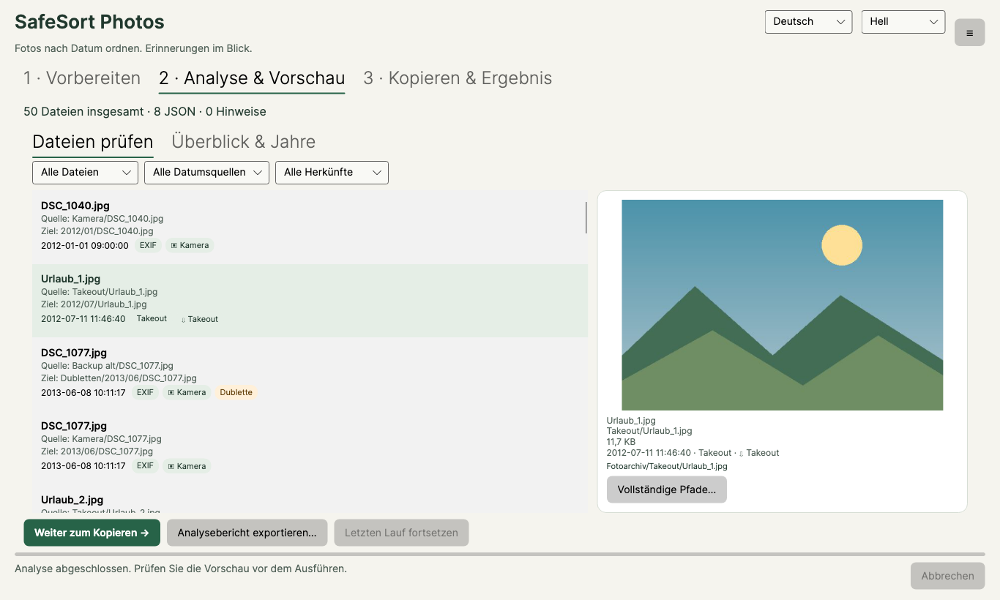

Ordner auswählenChoose folders
Wählen Sie Ihre Quellen und einen getrennten Zielordner. Die Analyse verändert noch keine Dateien.Choose source folders and a separate destination. Analysis does not change any files.
FÜR IHRE FOTOS. AUF IHREM PC.YOUR PHOTOS. ON YOUR PC.
Aus Kameraordnern, WhatsApp-Bildern und Google Takeout wird eine übersichtliche Sammlung nach Jahr und Monat. Sie prüfen die Vorschau, bevor SafeSort Photos beginnt.Turn camera folders, WhatsApp pictures and Google Takeout into a collection organised by year and month. Review the preview before SafeSort Photos starts.
SafeSort Photos erstellt immer geprüfte Kopien im Zielordner. Ihre Quelldateien bleiben an ihrem Platz. Die Verarbeitung erfolgt lokal.SafeSort Photos always creates verified copies in the destination folder. Source files stay in place. Processing happens locally.
Für Windows · App auf Deutsch und Englisch · kein Foto-UploadFor Windows · App in German and English · no photo uploads
VORHERBEFORE
▱ Ihre SammlungYour collection
DCIM / IMG_2841.jpg
WhatsApp / IMG-20230714.jpg
Takeout / DSC_0198.jpg
…NACHHER · BEISPIELAFTER · EXAMPLE
▱ FotoarchivPhoto archive
2019 / 07 / IMG_2841.jpg
2023 / 07 / IMG-20230714.jpg
2024 / 05 / DSC_0198.jpg✓ Jahr / MonatYear / MonthIhre Quelldateien bleiben an ihrem Platz, mit unverändertem Inhalt. SafeSort Photos schreibt keine EXIF-Daten in Ihre Originale. SafeSort Photos erstellt eine geprüfte Kopie und behält die Quelle an ihrem Platz.Source files stay in place with unchanged contents. SafeSort Photos does not write EXIF data into your originals. SafeSort Photos creates a verified copy and keeps the source in place.
VON DURCHEINANDER ZU ÜBERSICHTFROM CLUTTER TO CLARITY
Wählen Sie Ihre Quellen und einen getrennten Zielordner. Die Analyse verändert noch keine Dateien.Choose source folders and a separate destination. Analysis does not change any files.
Sehen Sie Datum, Herkunft und geplanten Zielpfad. Unsichere Daten und exakte Dubletten werden kenntlich gemacht.Check dates, origins and planned destinations. Uncertain dates and exact duplicates are identified.
SafeSort Photos erstellt geprüfte Kopien. Ein lokaler Bericht hält fest, was tatsächlich ausgeführt wurde.SafeSort Photos creates verified copies. A local report records what was actually completed.
DAS DATUM HAT EINE QUELLEEVERY DATE HAS A SOURCE
SafeSort Photos sucht in dieser Reihenfolge. Die Vorschau zeigt, woher das gewählte Datum stammt.SafeSort Photos checks these sources in order. The preview shows where the selected date came from.
EXIF und verfügbare Video-Metadaten.EXIF and available video metadata.
Passende Begleitdateien aus Ihrem Export.Matching sidecar files from your export.
Erkennbare Datumsangaben, etwa in WhatsApp-Namen.Recognisable dates, including WhatsApp names.
Rückfall, als unsicher gekennzeichnet.A fallback, marked as uncertain.
ERST ANSEHEN. DANN SORTIEREN.PREVIEW FIRST. SORT SECOND.
Keine Überraschung im Fotoordner: Prüfen Sie die geplante Struktur und filtern Sie die Liste vor dem Ausführen.Review the planned structure and filter the list before running a job.



EIN ECHTER KLEINER DEMOLAUFA REAL SMALL DEMO RUN
Diese eigenen Demoillustrationen wurden am 2. November 2026 mit dem lokalen SafeSort Photos-Core analysiert und kopiert. Das Datum stammt hier aus dem Dateinamen. Dies ist ein kontrolliertes Beispiel, kein Kameraformat- oder Windows-Nachweis.These original demo illustrations were analysed and copied with the local SafeSort Photos core on 2 November 2026. Dates here come from file names. This is a controlled example, not a camera-format or Windows validation.

14. Juli 2023 · Datumsquelle: Dateiname14 July 2023 · Date source: file name
Source/IMG_20230714_120000.jpgArchive/2023/07/IMG_20230714_120000.jpgDie zweite Bergdatei ist bytegleich. In diesem Lauf war „Dubletten überspringen“ aktiviert: eine Kopie erstellt, das weitere Exemplar ausgelassen. Beide Quellen bleiben erhalten.The second mountain file is byte-identical. “Skip duplicates” was enabled for this run: one copy created, the additional instance skipped. Both sources remain.
Source/IMG_20230714_120001.jpg
Im Demolauf nachgeprüft: alle drei Quellen bytegleich erhalten, beide Kopien bytegleich zur jeweiligen Quelle.Verified in this demo: all three sources unchanged, both copies byte-identical to their source.
Tatsächlichen Laufbericht als CSV öffnenOpen the actual run report as CSV · Prüfdaten (JSON)Verification data (JSON)
Im CSV wurde nur der temporäre Demowurzelpfad durch „Demo“ ersetzt. Technische Spalten und Status stammen aus dem erzeugten Bericht. Bilder sind eigene Illustrationen, keine privaten Fotos. Die Karten erläutern diesen Lauf und sind keine App-Ansicht.Only the temporary demo root path was replaced with “Demo” in the CSV. Technical columns and statuses come from the generated report. Images are original illustrations, not private photos. The cards explain this run; they are not an app screen.
IN RUHE AUSPROBIERENTRY IT AT YOUR PACE
Die Testversion läuft nie ab: Analyse, Vorschau und Analysebericht sind kostenlos und unbegrenzt. Kopieren und Sortieren ins Zielarchiv werden durch den Einmalkauf freigeschaltet.The trial never expires: analysis, preview and the analysis report are free and unlimited. A one-time purchase unlocks copying and sorting into the destination archive.
9,99 €€9.99
9,99 € einmalig, mit regionalen Preisen nach Kaufkraft. Die Store-Einstellung und Verfügbarkeit sind noch nicht bestätigt.€9.99 one time, with regional pricing based on purchasing power. Store configuration and availability are not yet confirmed.
Noch nicht veröffentlichtNot yet releasedGUT ZU WISSENGOOD TO KNOW
Die Testversion läuft nie ab. Analyse, Vorschau und Analysebericht sind kostenlos und unbegrenzt; zum Kopieren und Sortieren ins Zielarchiv ist der Einmalkauf erforderlich.The trial never expires. Analysis, preview and the analysis report are free and unlimited; copying and sorting into the destination archive require a one-time purchase.
Entpacken Sie den Export und behalten Sie die JSON-Begleitdateien neben den Medien. SafeSort Photos kann passende Zeitangaben daraus lesen. Es ändert weder die JSON-Dateien noch EXIF-Daten in Ihren Originalen.Extract the export and keep JSON sidecars alongside the media. SafeSort Photos can read matching date information from them. It does not modify the JSON files or EXIF data in your originals.
Wenn der Dateiname ein erkennbares Datum enthält, kann SafeSort Photos es verwenden. Ohne zuverlässige Datumsquelle wird das Dateidatum als unsicher markiert. Verlorene Aufnahmedaten werden nicht rekonstruiert.SafeSort Photos can use recognisable dates in file names. If no reliable source is found, it marks the file date as uncertain. Lost capture metadata is not reconstructed.
SafeSort Photos erkennt Dateien mit identischem Inhalt. Sie prüfen in der Vorschau, wie diese behandelt werden. Ähnliche Motive oder verschiedene Bearbeitungen sind keine exakten Dubletten.SafeSort Photos identifies files with identical contents. Review their handling in the preview. Similar subjects or different edits are not exact duplicates.
Ja. Rückgängig prüft die Kopien eines Laufs erneut und legt sie in den Windows-Papierkorb. Würde Windows etwas endgültig löschen, fragt SafeSort Photos vorher. Ihre Originale sind davon nicht betroffen, denn sie wurden nie verschoben oder verändert. Bewahren Sie die Protokolle auf; sie ersetzen kein Backup.Yes. Undo re-verifies a run’s copies and moves them to the Windows Recycle Bin. If Windows would delete anything permanently, SafeSort Photos asks first. Your originals are not affected because they were never moved or changed. Keep the logs; they do not replace a backup.
Ein synthetischer Test mit 100.000 kleinen Dateien hat Scan und Planung bestanden. Das ist kein Zeitversprechen für Ihr Fotoarchiv. Große Originaldateien, Laufwerk und Kopiervorgänge bestimmen den tatsächlichen Aufwand.A synthetic test with 100,000 small files passed scanning and planning. This is not a speed promise for your photo archive. Large originals, storage devices and copying determine the actual time required.
Analyse und Sortierung erfolgen lokal. SafeSort Photos implementiert keinen Foto-Upload und keine Analyse-Telemetrie. Store-Lizenzierung und Kauf verwenden Microsoft-Dienste. Von Ihnen gewählte Cloud- oder Netzwerkordner können unabhängig davon synchronisieren.Analysis and sorting happen locally. SafeSort Photos implements no photo upload or analytics telemetry. Store licensing and purchases use Microsoft services. Cloud or network folders you choose may synchronise independently.
Schreiben Sie anWrite to mip@gmx.biz.
Bitte senden Sie keine privaten Fotos oder vollständigen Protokolle ohne vorherige Prüfung.Please review private photos and full logs before sharing them.
Google Takeout und WhatsApp sind Marken ihrer jeweiligen Inhaber. SafeSort Photos ist unabhängig und steht in keiner Verbindung zu Google oder WhatsApp.Google Takeout and WhatsApp are trademarks of their respective owners. SafeSort Photos is independent and is not affiliated with Google or WhatsApp.